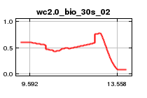
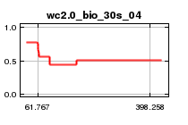
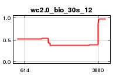
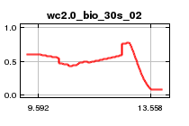
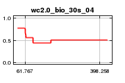
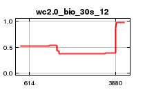

| Cumulative threshold | Logistic threshold | Description | Fractional predicted area | Training omission rate | Test omission rate | P-value |
|---|
| 1.000 | 0.094 | Fixed cumulative value 1 | 0.898 | 0.017 | 0.051 | 1.486E-1 |
| 5.000 | 0.188 | Fixed cumulative value 5 | 0.742 | 0.025 | 0.128 | 3.19E-2 |
| 10.000 | 0.251 | Fixed cumulative value 10 | 0.633 | 0.051 | 0.154 | 2.83E-3 |
| 0.094 | 0.038 | Minimum training presence | 0.973 | 0.000 | 0.000 | 1.478E-1 |
| 24.614 | 0.337 | 10 percentile training presence | 0.414 | 0.093 | 0.154 | 2.105E-8 |
| 39.421 | 0.420 | Equal training sensitivity and specificity | 0.259 | 0.263 | 0.308 | 3.394E-10 |
| 29.425 | 0.362 | Maximum training sensitivity plus specificity | 0.358 | 0.127 | 0.154 | 9.679E-11 |
| 36.717 | 0.404 | Equal test sensitivity and specificity | 0.283 | 0.237 | 0.282 | 8.725E-10 |
| 30.383 | 0.367 | Maximum test sensitivity plus specificity | 0.347 | 0.144 | 0.154 | 2.966E-11 |
| 4.368 | 0.176 | Balance training omission, predicted area and threshold value | 0.760 | 0.017 | 0.103 | 2.206E-2 |
| 10.259 | 0.253 | Equate entropy of thresholded and original distributions | 0.628 | 0.051 | 0.154 | 2.395E-3 |

 




